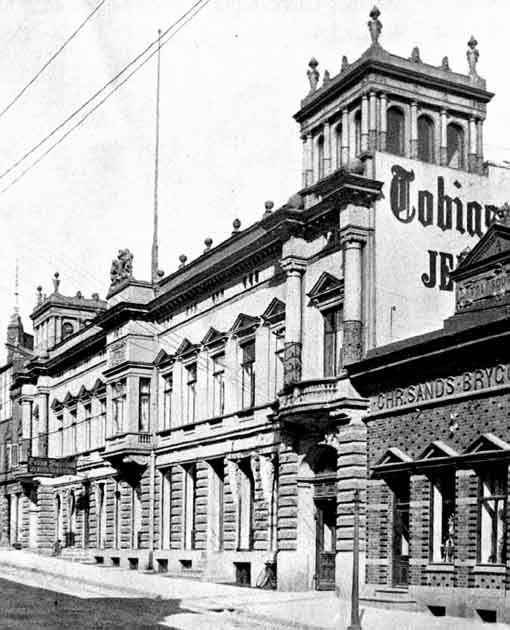
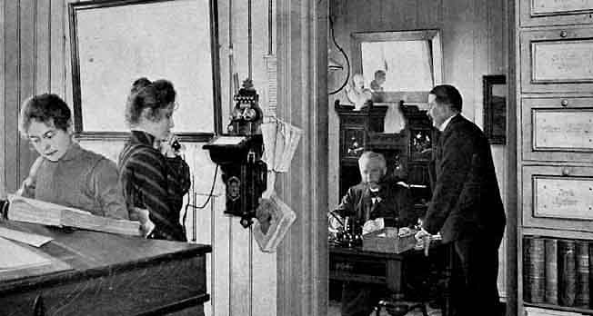
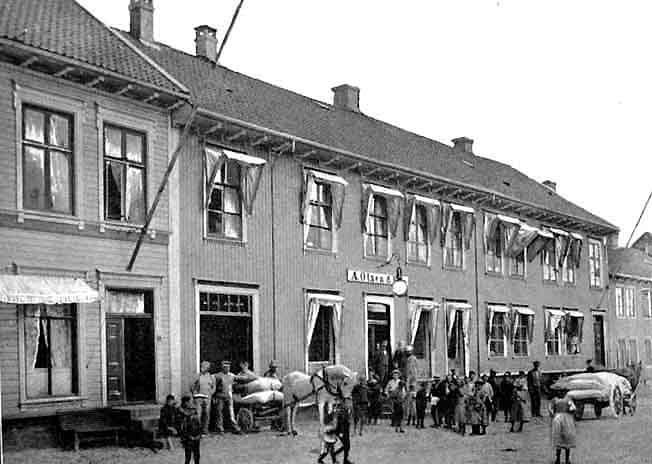
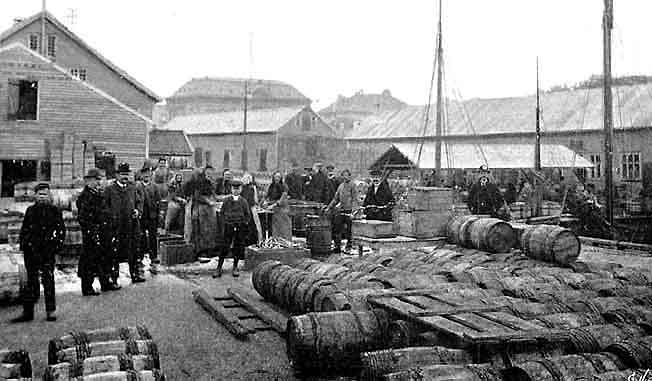
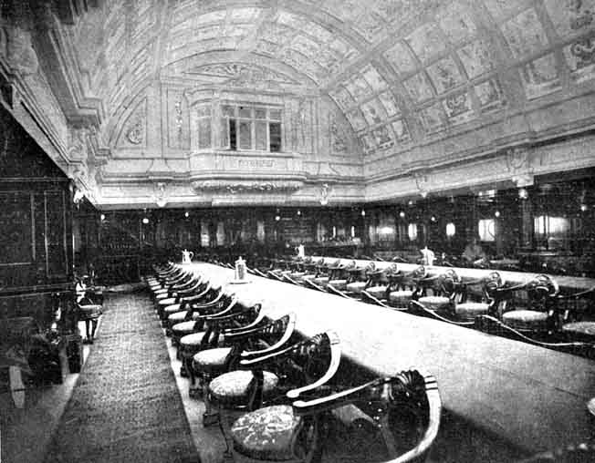

Forretninger i Kristiansand
Bildene er hentet fra boken "Kristianssands Næringsliv i ældre og nyere Tid" av Overrettsagfører P. Hansen. Den utkom mellom 1902 og 1905 på A. M. Hanches Forlag, Kristiania. Med de originale bildetekstene. - Torvald Slettebø
Samlagets Udskjænkningssted i Toldbodgaden.
Samlagets Udskjænkningssted i Toldbodgaden.
J. O. Gundersen & Co Vinforretning en gros.
J. O. Gundersen & Co, Filial i Kristiania.
Cheferne og Personalet i Kristianssand S.
Disponenten og Personalet for Filialen i Kristiania.
Tobias Siqueland Jernvarehandel i Toldbodgaden no. 6.
Forretningens Gaardsrum. Indfeld: Handelsreisende Joh. E. Nielsen.
Indre og ydre Kontor.

Butik og Lagerrum
Fra Støbegodslageret
Lagerrum i Kjelderen.
Gerh. Langfeldt, Forretningsgaarden.
Chefskontor

Kontor og Lager.
Lager
Lager
A. Olsen & Søn. Forretningslokalet.
Contor
Butiken
John. P. Johnsen. Kontorlokalerne
Forretningslokalet.
Parti fra Gaardspladsen.
Interiør fra Vinkjelderen..
Interiør fra Vinkjelderen.
Interiør fra Pakhuset.
Interiør fra Pakhuset.
Interiør fra Pakhuset.
Interiør fra Pakhuset.
Salteplads på Brandtomt i Haugesund.
T. Haanes. Fra Makrelsaltningen i Kristianssand.
Fra Makrelsaltningen i Kristianssand.

August Olsens Eiendom Torvet 20.
Arthur Normann, Hovedagentur for American Linien og Inman Linien.
Privatsalon S/S "St. Louis"
Røgesalon S/S "New-York".
Spisesalon S/S St. Louis", American Linen
Læsesalon, S/S Philadelphia".
Gerrards Forretningsgaard.
Interiør fra Gerrards Lager.
Interiør fra Gerrards Lager.
Oluf. A. S. Bellesens Forretningsgaard.
Fra Bellesens Lager.
H. Tranbergs Forretnigsgaard, Hjørnet Dronningens/Holbergsgade.

Butiken
Th. Rasmussen, Forretningsgaarden.
Butiken
Kontoret
Lager av Lenoleum etc
Kaabelageret
O. S. Kolsdals Forretningsgaard paa Hjørnet av Markens- og Henrik Wergelands Gade.
Interiør fra O. S. Kolsdals Butik.
Andreassen & Myhrstad, Forretningsgaarden, Hjørnet Markens- og Toldbodgaden.
Butiken
Kaabelageret
Interiør fra Butiken
Kontoret
Kjelderen
Carl Thomsen Manufactur, Ekvipering, Hvidevarer, Udstyr.
Ludvig Tobiassen Herreekviperingsforretning.
Andreas Stendal, Forretningsgaarden.
Interiør av Butiken
Interiør av Butiken
Thomas C. Petersen Manufacturforretning.
L. Lørhammers Klædehandel og Skrædderiforretning.
Fædrelandsvennens lokaler før Branden.
Fædrelandsvennens lokaler gjenopbygd.
Christianssands Tidende. Forretningsgaarden i Raadhusgaden.
Ernst Hotel i 1858, Rosenkildes Gaard.

Ernst Hotel før Branden i 1892. Rosenkildes Gaard.
Nuværende Ernst Hotel.